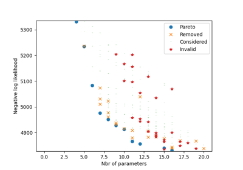

Assisted specification with Biogeme
Examples discussed in Bierlaire and Ortelli (2023) Assisted Specification with Biogeme 3.2.12


Segmentations and alternative specific specification
Segmentations and alternative specific specification


Combine many specifications: assisted specification algorithm
Combine many specifications: assisted specification algorithm


Re-estimation of best models